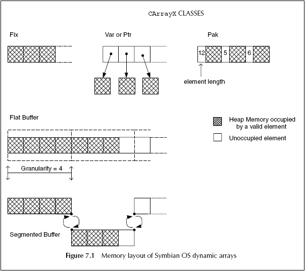
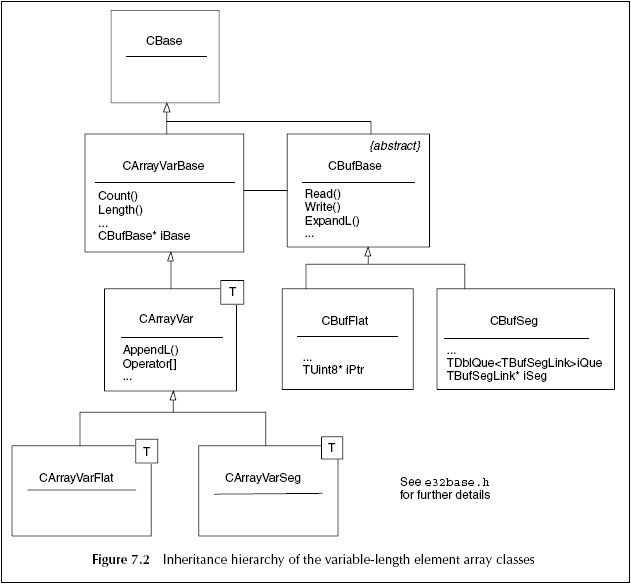

Dynamic Arrays and Buffers
for resources:
(o) RArray<class T>
(o) RPointerArray<class T>
for elements of data:
(o) CArrayX<class T> - ex:
CArrayFixFlat, CArrayFixSeg, CArrayVarSeg
(o) Dynamic buffer classes
The "capacity" of a dynamic
array is the number of elements the array at current moment.
When the capacity is filled, the array dynamically resizes itself by
reallocating heap
memory when the next element is added.
The number of additional elements allocated to the buffer is determined
by the "granularity",
which is specified at construction time.
So the "granularity" here gives the developer a way to fine-tune the
overhead done at one
realocation operation. This useful and dependent on how the array is
used.
Ex: mutithreaded app that will do realocation with granularity 1
becomes very overheading,
if the granularity is too big - 100 for instance -
then memory is wasted.
The
"RArray" classes are prefered over the "CArray" - the reason is
performance.
Why: The original CArrayX classes use CBufBase, which allows a varied
dynamic memory
layout for
the array using either flat or segmented array buffers.
However,
CBufBase works with byte buffers and requires a TPtr8 object to be
constructed
for every
array access. This results in a performance overhead, even for a simple
flat
array
containing fixedlength elements. Furthermore, for every method which
accesses the
array,
there are a minimum of two assertions to check the parameters, even in
release builds.
For a "CArray" + prefix, means:
"Fix" - for
elements which have the same length - can be contained in the array buffer.
"Var" - for
elements which have different length - is contained in its own heap cell,
and the array buffer contains pointers to them.
"Pak" - for a packed array where the elements are of variable length;
they are copied so they may be contained within the array buffer.
Each element is preceded by its length information, rather like a
descriptor.
"Ptr" for an array of pointers to CBase-derived objects.

"CArray" classes that is preferred to use for variable length data:
"CArrayVarFlat"
- is used for variable-length elements referenced by pointer elements,
using a flat
memory layout for the array.
"CArrayVarSeg"
- is used for variable-length elements referenced by pointer elements,
using a
segmented array layout.
"CArrayPakFlat"
- is used for fixed- or variable-length elements that are stored in
the flat array
buffer itself, each element containing information about its length.
"CArrayPtrSeg" - is used for an array of pointers in a segmented array.

Dynamic Descriptor Arrays (arrays
of strings)
These arrays extend the dynamic array classes and are defined in the
Symbian OS Basic Application Framework Library (BAFL) component, which
means
that you must link against "bafl.lib" in order to use them.
There are two types of descriptor array, both of which are provided for
both 8-bit and 16-bit descriptors:
(o) a pointer descriptor array
holds only non-modifiable "TPtrC" descriptor
elements. The pointer descriptors
are added to the array, but the data they point to
is not copied.
Calsses: "CPtrC8Array",
"CPtrC16Array".
Derived from: "CArrayFixFlat<TPtrC8>",
"CArrayFixFlat<TPtrC16>"
respectively.
(o) a general descriptor array
hold any descriptor type, storing it as a
nonmodifiable element. That is,
an "HBufC"
copy is created for each descriptor added to the array; the array
itself stores pointers to these heap descriptor
copies. The abstract base
class for a buildindependent general descriptor
array is "CDesCArray" - the explicit
variants
CDesC16Array and CDesC8Array may be used where necessary.
These classes derive from "CArrayFixBase". The concrete
implementation classes
are "CDesCXArrayFlat"
- for flat array storage, or "CDesCXArraySeg"
- for
segmented storage, where X=8, 16, or is not declared
explicitly.
Which and when to use:
General
descriptor arrays are useful because you do not have to use a
particular
concrete
descriptor type and thus can equally well store HBufC,
TPtrC or TBuf
objects in the
array. These arrays take a copy of the original descriptor, which
increases the
amount of memory used compared to the pointer descriptor arrays, which
do not take
copies. However, it does mean that the original descriptor can then be
safely
discarded when using the general descriptor arrays. Pointer descriptor
arrays
do not take
copies, so the descriptor elements must remain in memory for the
lifetime
of the array,
otherwise it references invalid information.
Fixed-Length Arrays
"TFixedArray" - hen you
know the number of elements that will occupy an array.
Dynamic Buffers - ( CBufFlat,
CBufSeg )
Useful for storing binary data when its size is not fixed at
compile time and
it may need to expand to a potentially significant size at runtime.